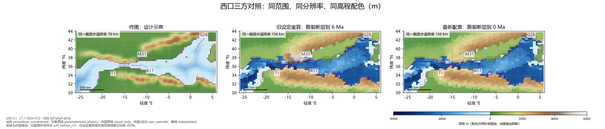
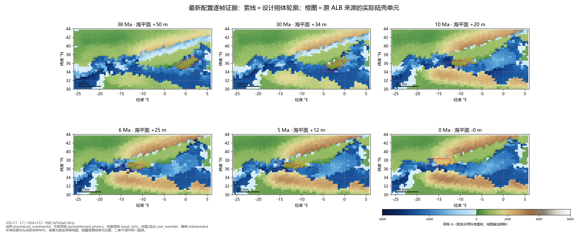
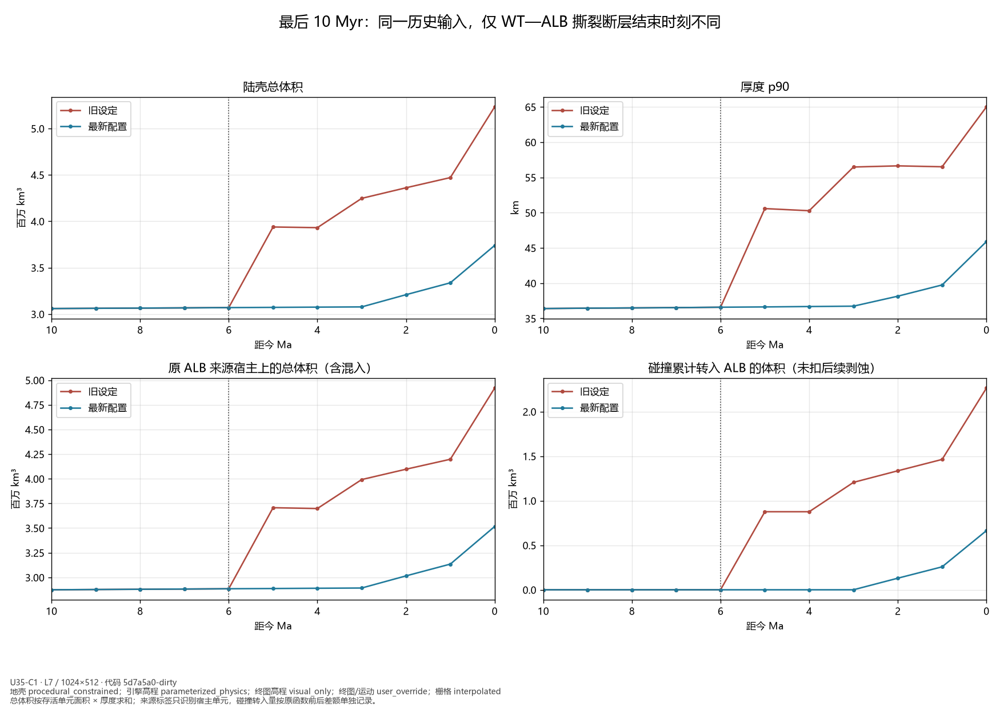
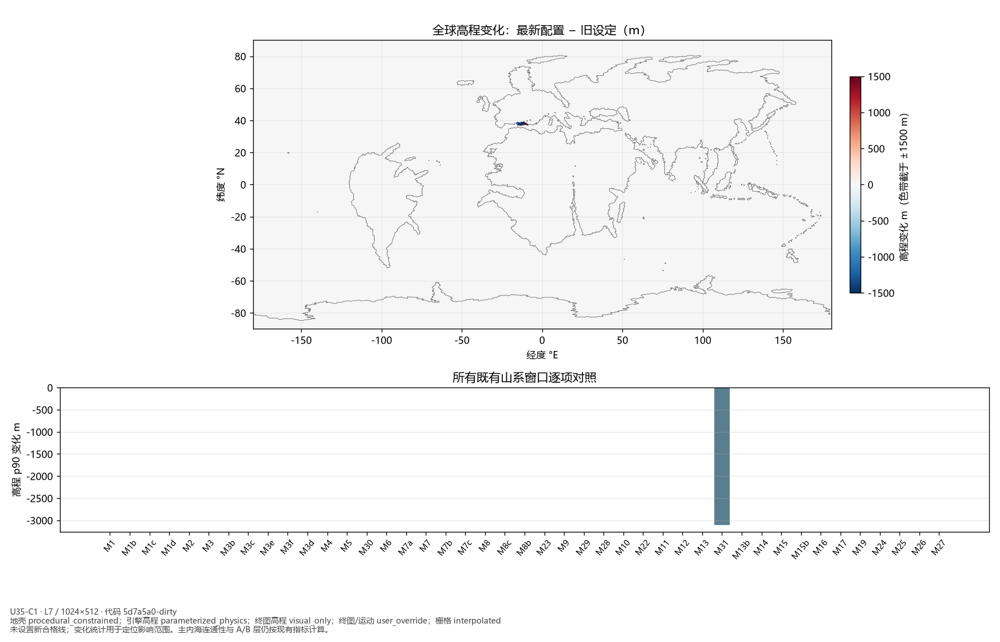
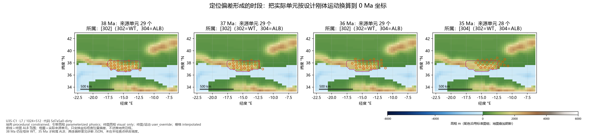

U35-C1：复现与诊断
仅复现和诊断，地貌修正另行决定。图中数值来自实际运行。
Claude 留下的原始西口图 · 最新标准图组
15_west_arc_c1_comparison.png

16_west_arc_c1_evolution.png

17_west_arc_c1_history.png

18_west_arc_c1_global_change.png

19_west_arc_c1_rift_timing.png
